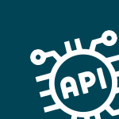

APIs used
A reference of the Salesforce APIs Nektar uses — useful for security reviews, IT approval workflows, and compliance documentation.

This is under-the-hood technical detail that's not necessary for using Nektar.
APIs
- For reading data from Salesforce, Nektar uses the SOQL API. This reads up to 200 records at a time, and enables incremental reads — reading only records that have been created, updated or deleted since the previous read.
- For writing data into Salesforce, Nektar uses the REST API that allows writing up to 200 records at a time.